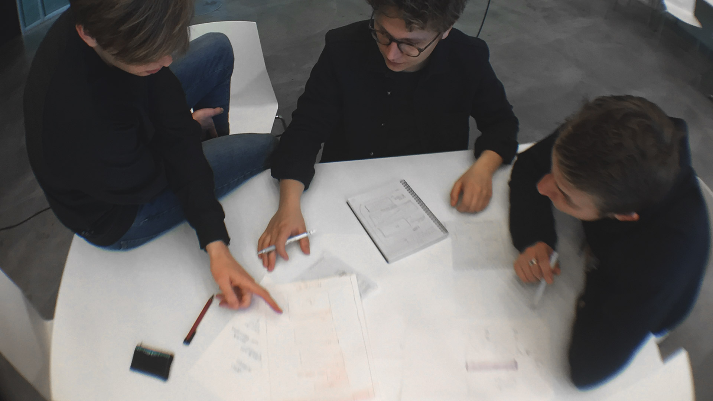

The website addresses the challenge that many DMD students have a hard time communicating what they have learned to peers and employers, as they do not have a preconceived idea of what such an educational programme might contain. What qualifications do the students gain? What problems are they capable of solving?
WWLFDMD seeks to answer these questions through a universe of short articles addressing the genres, theories, and methods which are taught on the programme.
What We Learnt From DMD
Year: Fall 2016
Academic work: Group based project
My role: Visual language, UX research, sketching and prototyping
What We Learnt From DMD (WWLFDMD) is a high fidelity prototype showcasing an online encyclopedia for fellow students to use. It's a quick overview of relevant theory, methods, and tools from the bachelor, Digital Media and Design, I as a designer (and student) have experienced.

Challenge
Process
In conjunction with the head of the DMD programme, we divided different subjects into three categories: Genres, Concepts, and Methods to form an easy overview. Through interviews with fellow students, we realised that the site might also be useful for them as a reference work.
Throughout this process tools and methods such as sketching, wire framing, mockups, card sorting and usability testing interactive prototypes was utilised. A project report with reflections on the design practice was written afterwards.

Learnings
Even though I finished my BSc degree’s in DMD before this project, the process of designing WWLFDMD gave me newfound clarity regarding the knowledge I attained through the DMD programme - a testament to the relevance of a website like that which was created.